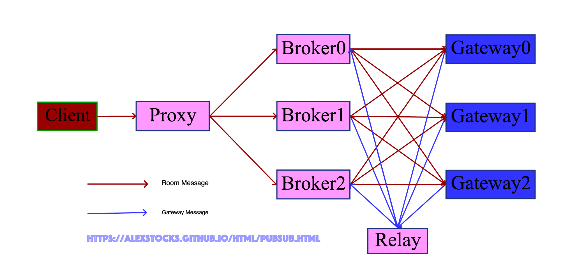
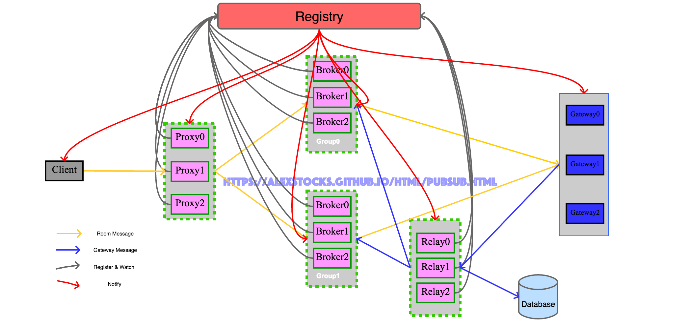

written by Alex Stocks on 2017/12/31
所谓系统pub/sub，就是一种群聊方式，譬如直播房间内的聊天对应的服务器端就是一个pub/sub系统。
2017年9月初初步实现了一套极简的pub/sub系统，其大致架构如下：

系统名词解释：
1 Client : 系统消息发布者，publisher；
2 Proxy : 系统代理，对外统一接口，收集Client发来的消息转发给Broker；
3 Broker ：系统Server，Broker会根据Gateway message组织Room ID和Gateway IP&port的映射关系，然后把Proxy发来的消息转发到Room中所有成员登录的所有Gateway，；
4 Relay ：用户登录消息转发者，把Gateway转发来的用户登入登出消息转发给所有的Broker；
5 Gateway：所有服务端的入口，接收合法客户端的连接，并把客户端的登录登出消息通过Relay转发给所有的Broker；
当一个Room中多个Client连接一个Gateway的时候，Broker只会根据Room ID把房间内的消息转发一次给这个Gateway，由Gateway再把消息复制多份分别发送给连接这个Gateway的Room中的所有客户端。
这套系统有如下特点：
从以上特点，整个消息系统足够简单，不考虑扩缩容问题，当系统负载到达极限的时候，就重新再部署一套系统以应对后端client的消息压力。
这种处理方式本质是把系统的扩容能力甩锅给了后端Client以及前端Gateway：每次扩容一个系统，所有Client需要在本地配置文件中添加一个Proxy地址然后全部重启，所有Gateway则需要再本地配置文件添加一个Relay地址然后全部重启。
这种“幸福我一人，辛苦千万家”的扩容应对方式，必然导致公司内部这套系统的使用者怨声载道，升级之路就是必然的了。
大道之行也，天下为公，不同的系统有不同的构架，相同的系统总有类似的实现。类似于数据库的分库分表【关于分库分表，目前看到的最好的文章是参考文档1】，其扩展实现核心思想是分Group分Instance。
从数据角度来看，这套系统接收两种消息：房间聊天消息和用户登录消息。两种消息的交汇之地就是Broker，所以应对扩展的紧要地方就是Broker。
首先，当Room Message量加大时可以对Proxy进行水平扩展，多部署Proxy即可因应Room Message的流量。
其次，当Gateway Message量加大时可以对Relay进行水平扩展，多部署Relay即可因应Gateway Message的流量。
最后，两种消息的交汇之地Broker如何扩展呢？可以把若干Broker Instance组成一个Group，因为Gateway Message是在一个Group内广播的，所有Broker Instance都会复制一份Gateway message以组织Room Id和Gateway IP&port的映射关系，因此当Gateway message增加时垂直扩容Group即可。当Room Message量增加时，水平扩容Group内的Broker Instance即可，因为Room Message只会发送到Group内某个Instance上。
从个人经验来看，Room ID的增长以及Room内成员的增加量在一段时间内可以认为是直线增加，而Room Message可能会以指数级增长，所以设计得当的话Group垂直扩容的概率很小，而Group内Instance水平增长的概率几乎是100%。
不管是Group垂直扩容还是Group Instance的水平扩容，不可能像系统极简版本那样每次扩容后都需要Client或者Gateway去更新配置文件然后重启，因应之道就是可用zookeeper充当角色的Registriy。通过这个zookeeper注册中心，相关角色扩容的时候在Registry注册后，与之相关的其他模块得到通知即可获取其地址等信息。
分析完毕，与之相对的架构图如下：

各个模块详细流程说明如下：
1 client启动的时候先从Registy上get到Proxy注册路径/pubsub/proxy下所有的Proxy，并watch这个路径，然后采用相关负载均衡算法把消息转发给某个Proxy;
当/pubsub/proxy下有新的实例信息的时候，Regitsty会通知给Client;
2 Proxy启动时读取/pubsub/groupnum的值（譬如为2），接着读取路径/pubsub/broker/group0和/pubsub/broker/group1下所有的Broker实例，同时watch注册中心的路径/pubsub/groupnum的值的改变，最后把自身信息注册到Registry路径/pubsub/proxy下；
当/pubsub/group_num的值发生改变的时候(譬如值改为4)，意味着pubsub系统发生了垂直扩展，Proxy要及时读新group路径（如/pubsub/broker/group2和/pubsub/broker/group3）下的实例，并watch这些路径，关注相应Group下实例的改变；
之所以Proxy在获取Registry下所有当前的Broker实例信息后再注册自身信息，是因为此时它才具有转发消息的资格。
Proxy转发某个Room消息时候，先根据约定的哈希算法以Room ID为参数把Room Message发送到某个Broker Group【譬如Room ID % Broker Group number】，然后再根据Group内Broker总数和哈希算法【譬如Room ID % Broker number】把消息转发到Broker Group内某个Broker实例；
3 Broker启动之时先把自身信息注册到Registry路径/pubsub/broker/relay_group(x)下，然后从Relay Database里把Room ID到某Group的所有映射关系加载过来，但只留下自身所在的Broker Group所应该负责的映射数据，待加载完毕数据后再把自身注册到Registry路径/pubsub/broker/group(x)下；
注意Broker之所以先注册然后再加载Database中的数据，是为了在加载数据的时候同时接收Relay转发来的Gateway Message，但是在数据加载完前这些受到的数据先被缓存起来，待映射关系加载完并被清洗干净后再把这些数据重放一遍；
Broker之所以要针对relay和proxy分别注册两个路径，是为了在加载完毕映射关系前不对Proxy提供转发消息的服务，同时也方便Broker Group应对的消息量增大时进行水平扩展；
当Broker发生垂直扩展的时候，新的Group个数必须是2的幂，只有新Group内所有Broker Instance都加载实例完毕，再更改/pubsub/group_num的值；
老的Broker也要watch路径/pubsub/group_num的值，当这个值增加的时候，它需要清洗不再由自身负责的路由映射数据；
4 Relay启动之时先读取/pubsub/groupnum的值（譬如为2），接着读取路径/pubsub/broker/relaygroup0和/pubsub/broker/relaygroup1下所有的Broker实例，同时watch注册中心的路径/pubsub/groupnum的值的改变，，并watch注册中心路径pubsub/broker/group0和/pubsub/broker/group1下所有的Broker实例，最后把自身信息注册到Registry路径/pubsub/relay下；
Relay工作流程与Proxy相似，不同之处在于：收到Gateway Message后先把数据写入Database中，然后把Message发送给Room ID对应的group内所有Broker Instance。
系统具有了可扩展性仅仅是系统可用的初步，整个系统要保证最低粒度的SLA（0.99），就必须在两个维度对系统的可靠性就行感知：消息延迟和系统内部组件的高可用。
准确的消息延迟的统计，通用的做法可以基于日志系统对系统所有消息或者以一定概率抽样后进行统计，但限于人力目前没有这样做。
目前使用了一个方法：通过一种构造一组伪用户ID，定时地把消息发送给proxy，每条消息经过一层就把在这层的进入时间和发出时间以及组件自身的一些信息填入消息，这组伪用户的消息最终会被发送到一个伪Gateway端，伪Gateway对这些消息的信息进行归并统计后，即可计算出当前系统的平均消息延迟时间。
通过所有消息的平均延迟可以评估系统的整体性能。同时，因为系统消息路由的哈希方式已知，当固定时间内伪Gateway没有收到消息时，就把消息当做发送失败，当某条链路失败一定次数后就可以产生告警了。
上面的方法同时能够检测某个链路是否出问题，但是链路具体出问题的点无法判断，且实时性无法保证。
为了保证各个组件的高可用，系统引入了另一种评估方法：每个层次都给后端组件发送心跳包，通过心跳包的延迟和成功率判断其下一级组件的当前的可用状态。
譬如proxy定时给每个group内每个broker发送心跳，可以依据心跳的成功率来快速判断broker是否处于“假死”状态（最近业务就遇到过broker进程还活着，但是对任何收到的消息都不处理的情况）。
同时依靠心跳包的延迟还可以判断broker的处理能力，基于此值做同一group内多broker端的负载均衡。
公司内部内部原有一个走tcp通道的pubsub系统，但是经过元旦一次大事故（几乎全线崩溃）后，相关业务的一些重要消息改走这套基于UDP的pubsub系统了。这些消息如服务端下达给客户端的游戏动作指令，是不允许丢失的，但其特点是相对于聊天消息来说量非常小（单人1秒最多一个），所以需要在目前UDP链路传递消息的基础之上再构建一个可靠消息链路。
国内某IM大厂的消息系统也是以UDP链路为基础的，他们的做法是消息重试加ack构建了可靠消息稳定传输链路。但是这种做法会降低系统的吞吐率，所以需要独辟蹊径。
UDP通信的本质就是伪装的IP通信，TCP自身的稳定性无非是重传、去重和ack，所以不考虑消息顺序性的情况下可以通过重传与去重来保证消息的可靠性。
基于目前系统的可靠消息传输流程如下：
正常的消息在pubsub系统中传输时，Proxy会根据消息的Room ID传递给固定的Broker，以保证消息的有序性。
这套pubsub系统，只考虑了消息的传递，尚需完善，有一下task lisk：
此记。
于雨氏，2017/12/31，初作此文于丰台金箱堂。
于雨氏，2018/01/16，于海淀添加“系统稳定性”一节。
于雨氏，2018/01/29，于海淀添加“消息可靠性”一节。